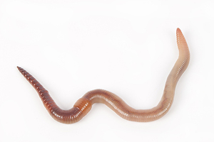

ϥⲛⲧ SA, ⲃ. S, ϥⲉⲛⲧ SB, ⲟⲩⲉⲛⲧ S, ⲃⲉⲛⲧ SfF, ⲃⲏ. F nn m f, worm: Deu 28 39 S f B, Ps 21 6 SB, Pro 12 4 SAB, Jon 4 7 SA2, Mk 9 48 SBF, Va 58 167 B ⲡⲓϥ. ⲉⲧⲧⲁⲕⲟ ⲙⲡⲓⲥⲟⲣⲧ σκώληξ; Joel 1 4 B (S ⲕⲟⲟⲙϥ Mor 22 9, A = Gk) κάμπη; BMis 546 S ⲡⲟⲩ. ⲉⲓⲣⲉ ⲛⲟⲩⲙⲁϩⲉ ⲛϣⲓⲏ vermes; Tri 305 S ⲡⲃ., K 172 B ϯϥ. دودة, ib 442 B ⲡⲓϥ. دود; ShBM 214 S fire & ⲡϥ. of hell, ShP 1302 128 S unsalted meat ⲉⲣ ⲡⲕⲉⲗⲁⲁⲗⲉ ⲛϥ., R 2 1 67 S ⲟⲩϥ. ⲉϥⲟⲩⲱⲙ ϩⲓϩⲟⲩⲛ ⲛⲟⲩϣⲉ, Gu 92 Sf ⲛⲉⲃⲉ. devouring corpse, PBad 5 397 F ⲟⲩⲃⲏ. ⲉⲃⲛⲕⲁⲧ, Mor 24 25 F ⲃⲏ. ⲉϥϩⲁⲩ, BM 1223 A ]ⲟⲩϥ. ϣⲟⲩⲟ ⲉⲃⲟⲗ ⲙⲙⲟⲥ, DeV 1 122 B sim;ⲣ ϥ., produce worms, be worm-eaten: Ex 16 20 SB σκ. ἐκζεῖν (cf ⲗⲁⲁⲗⲉ); Mor 16 16 S water ⲗⲟⲙⲥ ⲉϥⲟ ⲛⲃ., DeV 1 123 B ⲁⲡⲉϥⲥⲙⲟⲧ ⲛϩⲱⲟⲩⲧ ⲗⲟϥⲗⲉϥ ⲉⲃⲟⲗ ⲁϥⲉⲣ ϥ. (cf Si 19 3);ⲉⲣϭⲓ (ϫⲓ) ϥ. B Ac 12 23 (var ϫⲓ ⲛϥ., S ⲣ ϥ., var ϥⲛⲧϥ) σκωληκόβρωτος γίνεσθαι.
(noun male/female)
species
worm [σκωληξ]

1: worm
complete
| ⲣ ϥ. | produce worms, be worm-eaten3231 | 623b | |||||||
41a
ⲃⲛⲧ v ⲃⲟⲛⲧⲉ & ϥⲛⲧ.
623b